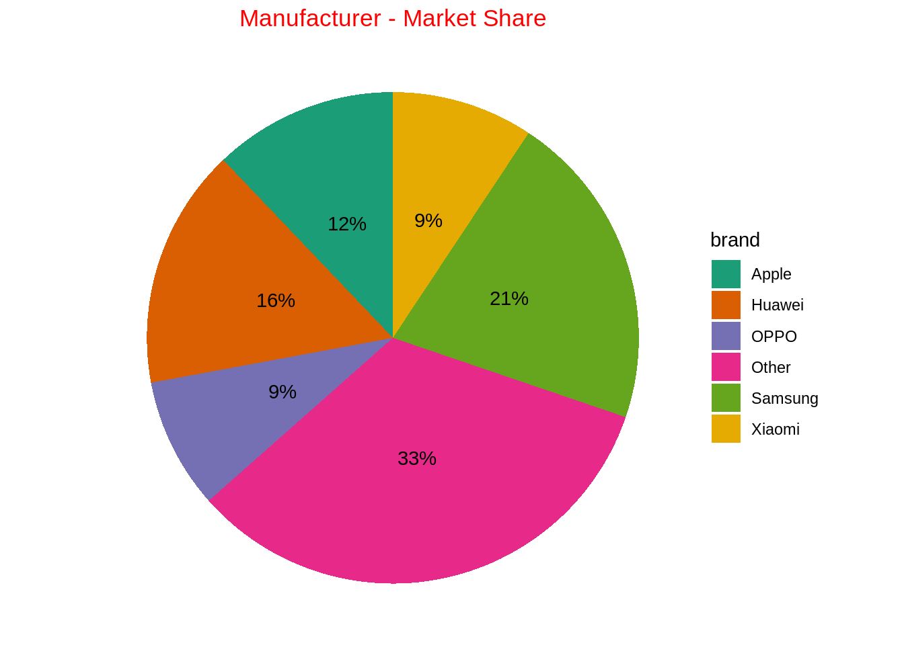
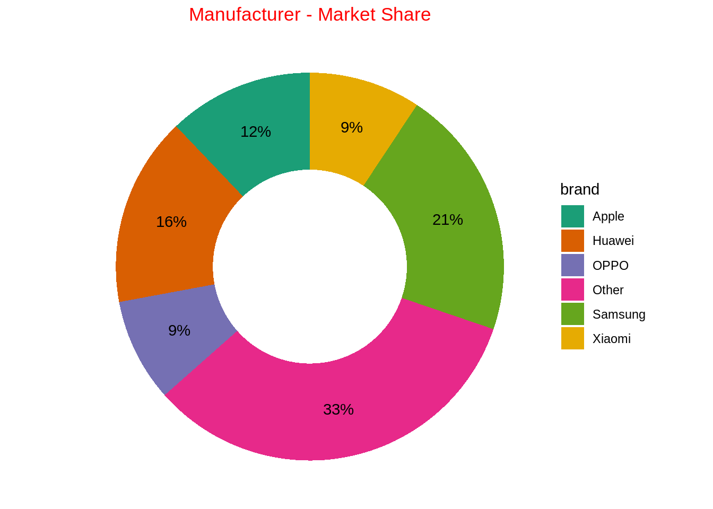

df = data.frame(brand = c("Samsung","Huawei","Apple","Xiaomi","OPPO","Other"),
share = c(.2090,.1580,.1210,.0930,.0860,.3320))What is a pie chart?
A chart depicted by a circle, where the areas of the circle represent 100% proportion. To subdivide the circle into proportion, a line is drawn from axis to the circumference of circle - proportionate dividing the pie based on values.
Pie charts are not recommended as a good visualization, rather we can use the bar plots instead.
When to use it?
- When representing the proportion of values
- When drawing comparison between discrete variables and their aggregated values
- When the discrete variables being represented are less than 4. Additionally, good labels are added.
When not to use it?
- When the discrete variables being represented are greater than 5
- When comparison of a discrete variable, having another another discrete variable is required
Hueristic of making a pie chart in R
- In the ggplot, aesthetic function call,
- x should be empty
- y should be the numerical variable from the dataset.
- Fill argument should be the categorical variable from dataset.
- Call geom_bar() function, wherein stat = “identity” and width = 1 is defined.
- Call coord_polar() function with arguments (“y”, start = 0)
- Put value text labels using, geom_text() and also position it correctly like this. geom_text(aes(label = paste0(round(share * 100), “%”)), position = position_stack(vjust = 0.5))
- Put better colors for the fill argument in ggplot call like this. scale_fill_manual(values = c())
- Finally, eliminate all the labels using the labs() functions call and only specifying the title.
Examples of making pie chart using ggplot2
Creating a sample data.
Donut chart
ggplot(data = df, mapping = aes(x = "", y = share, fill = brand)) +
geom_bar(stat = "identity", width = 1) +
coord_polar(theta = "y", start = 0) +
geom_text(aes(
label = str_c(round(share*100), "%")),
position = position_stack(vjust = 0.5)
) +
theme_void() +
scale_fill_brewer(palette = "Dark2") +
labs(title = "Manufacturer - Market Share") +
theme(
plot.title = element_text(hjust = 0.5, color = "red")
)
ggplot(data = df, mapping = aes(x = 2, y = share, fill = brand)) +
geom_bar(stat = "identity", width = 1) +
coord_polar(theta = "y", start = 0) +
geom_text(aes(
label = str_c(round(share*100), "%")),
position = position_stack(vjust = 0.5)
) +
theme_void() +
scale_fill_brewer(palette = "Dark2") +
labs(title = "Manufacturer - Market Share") +
theme(
plot.title = element_text(hjust = 0.5, color = "red")
) +
xlim(0.5, 2.5)